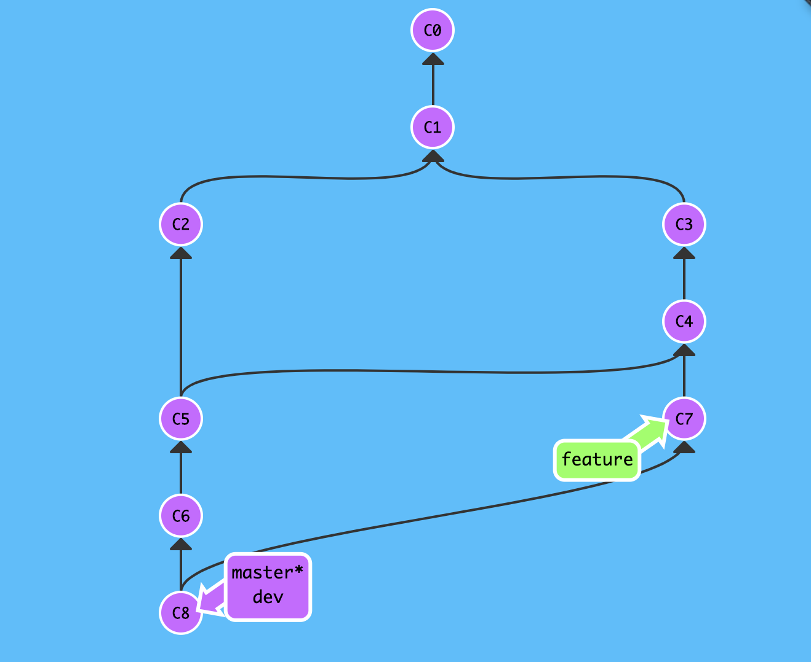
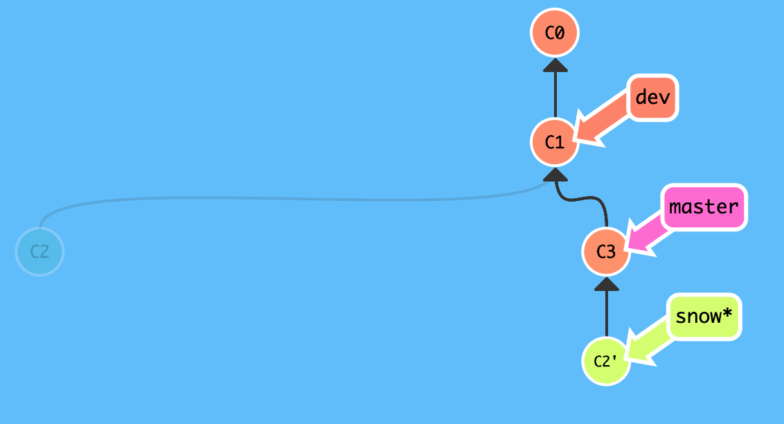

1. 变基合并
git 鼓励大量使用分支---"早建分支!多用分支!",这是因为即便创建再多的分支也不会造成存储或内存开销,并且分支的作用有助于我们分解逻辑工作,这样一样其实比维护单一臃肿分支要简单得多!
正因如此,每个新功能会创建合并分支,修复 bug 会创建合并分支等等,一段时间后再次回顾整个版本库的提交历史就会发现分支错综复杂,难以理清!
虽然"条条大路通罗马",但错综复杂的道路容易让人迷失方向,如果不使用分支,当然就不存在"分叉问题",所以在某些情况下我们希望寻求一种替代方案来解决分支合并带来的"分叉问题"!
1.1. 回顾提交历史
查看提交历史: git log --pretty=oneline --graph --abbrev-commit
# 查看提交历史
$ git log --pretty=oneline --graph --abbrev-commit
* e60c8ad (HEAD -> dev, origin/master, origin/HEAD, master) fix bug about issue-110
* 3fe94c0 fast forward
* 22fbef7 git merge --no-ff dev
|\
| * 44d68f6 git checkout -b dev
|/
* 3b8f434 fix conflict
|\
| * 0fe95f8 git commit c2
* | 0949cc3 git commit c3
|/
* 5c482cd git commit c1
* 413a4d1 see https://snowdreams1006.github.io/git/usage/branch-overview.html
* 9c30e50 learn git branch
* b3d8193 see https://snowdreams1006.github.io/git/usage/remote-repository.html
* 8e62564 add test.txt
* 9b196aa Initial commit
仅仅是简单的演示项目的提交历史都已经出现"分叉问题",更何况真实的企业级开发项目呢?如果真的是多分支多人合作开发的话,"分叉现象"将更加明显,模拟效果图大概长这样:

1.2. 整理提交历史
如果想要一条直路直达罗马,那我们必须规划好路径,摒弃小道,坚持主干道.git 的各种 dev,feature等分支就是需要治理的一条条分叉小道,而 master 主分支就是我们的大道.
演示项目有三个分支,主干master,开发dev,自定义snow,目标是将自定义 snow 分支的工作成功整理合并到主干分支,从而解决"分叉问题",dev 分支与项目演示无关,无需更改.
(1). 切换到 snow 分支并提交一个版本(learn git rebase)
# 切换到 `snow` 分支
$ git checkout snow
Switched to branch 'snow'
# 追加新内容到 `test.txt` 文件
$ echo "learn git rebase" >> test.txt
# 提交到版本库
$ git commit -am "learn git rebase"
[snow 7d21e80] learn git rebase
1 file changed, 1 insertion(+)
$

(2). 切换到 master 分支也提交一个版本(modify README)
# 切换回 `master` 分支
$ git checkout master
Switched to branch 'master'
Your branch is up to date with 'origin/master'.
# 追加新内容到 `README.md` 文件
$ echo "learn git ,share git" >> README.md
# 提交到版本库
$ git add README.md
$ git commit -m "modify README"
[master 3931d48] modify README
1 file changed, 1 insertion(+)
$

(3). 切换回 snow 分支,整理提交历史(git rebase)到 master 分支
# 切换到 `snow` 分支
$ git checkout snow
Switched to branch 'snow'
# 改变基础版本(父版本),简称"变基"
$ git rebase master
HEAD is up to date.
# 当前提交历史线
$ git log --pretty=oneline --graph --abbrev-commit
* e92f068 (HEAD) rebase
* 72f4c01 fix confict about happy coding
* 3931d48 (master) modify README
* e60c8ad (origin/master, origin/HEAD, dev) fix bug about issue-110
* 3fe94c0 fast forward
* 22fbef7 git merge --no-ff dev
|\
| * 44d68f6 git checkout -b dev
|/
* 3b8f434 fix conflict
|\
| * 0fe95f8 git commit c2
* | 0949cc3 git commit c3
|/
* 5c482cd git commit c1
* 413a4d1 see https://snowdreams1006.github.io/git/usage/branch-overview.html
* 9c30e50 learn git branch
* b3d8193 see https://snowdreams1006.github.io/git/usage/remote-repository.html
* 8e62564 add test.txt
* 9b196aa Initial commit
$

(4). 切换回 master 主干分支再次变基合并 snow 分支
# 切换回 `master` 分支
$ git checkout master
Warning: you are leaving 2 commits behind, not connected to
any of your branches:
e92f068 rebase
72f4c01 fix confict about happy coding
If you want to keep them by creating a new branch, this may be a good time
to do so with:
git branch <new-branch-name> e92f068
Switched to branch 'master'
Your branch is ahead of 'origin/master' by 1 commit.
(use "git push" to publish your local commits)
# 改变父版本为 `snow` 分支指向的版本
$ git rebase snow
First, rewinding head to replay your work on top of it...
Applying: modify README
$

(5). 整理分支完成,最终主干分支是一条直线
# 查看提交历史线
$ git log --pretty=oneline --graph --abbrev-commit
# `modify README` 是 `master` 分支提交的版本
* dcce09c (HEAD -> master) modify README
# `learn git rebase` 是 `snow` 分支提交的版本
* 7d21e80 (snow) learn git rebase
* a06a866 fix conflict
|\
| * e60c8ad (origin/master, origin/HEAD, dev) fix bug about issue-110
* | ab846f9 learn git stash
* | 93227ba Happy coding
|/
* 3fe94c0 fast forward
* 22fbef7 git merge --no-ff dev
|\
| * 44d68f6 git checkout -b dev
|/
* 3b8f434 fix conflict
|\
| * 0fe95f8 git commit c2
* | 0949cc3 git commit c3
|/
* 5c482cd git commit c1
* 413a4d1 see https://snowdreams1006.github.io/git/usage/branch-overview.html
* 9c30e50 learn git branch
* b3d8193 see https://snowdreams1006.github.io/git/usage/remote-repository.html
* 8e62564 add test.txt
这一次我们没有使用 git merge 而是采用 git rebase 方式完成了分支的合并,优点是提交历史更清晰,缺点是丢失了分支信息.
1.3. 小结
git rebase 变基合并分支,实际上就是取出一系列的提交版本并“复制”到目标版本,从而形成一条新的提交历史线.
比如我们想要把 bugFix 分支里的工作直接移到 master 分支上,移动以后会使得两个分支的功能看起来像是按顺序开发,但实际上它们是并行开发的,这就是 git rebase 的作用.
git rebase 的优势是创造更线性的提交历史,使得代码库的提交历史变得异常清晰,劣势是缺失了分支信息,好像从没存在过该分支一样.
- 将目标分支上的工作成果转移到到主干分支 :
git rebase master - 主干分支接收已转移好的目标分支工作成果 :
git rebase <branch>